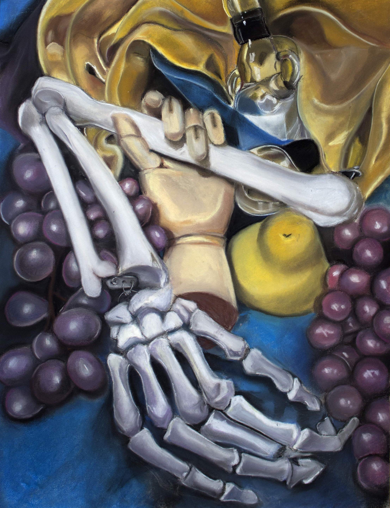
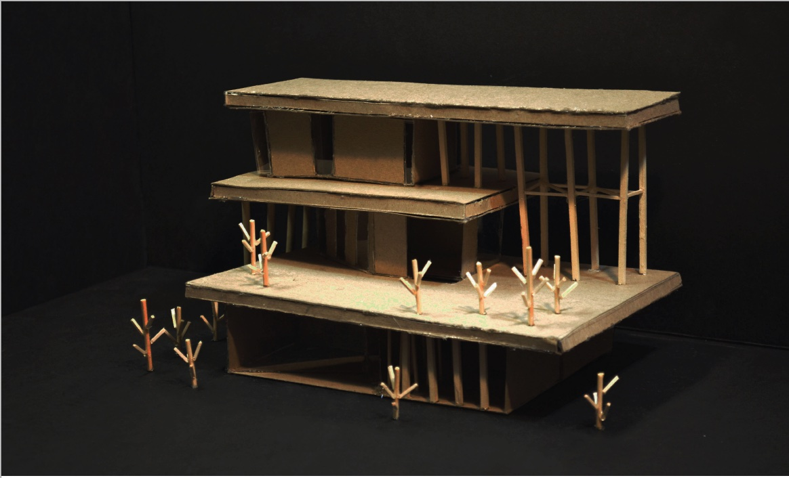
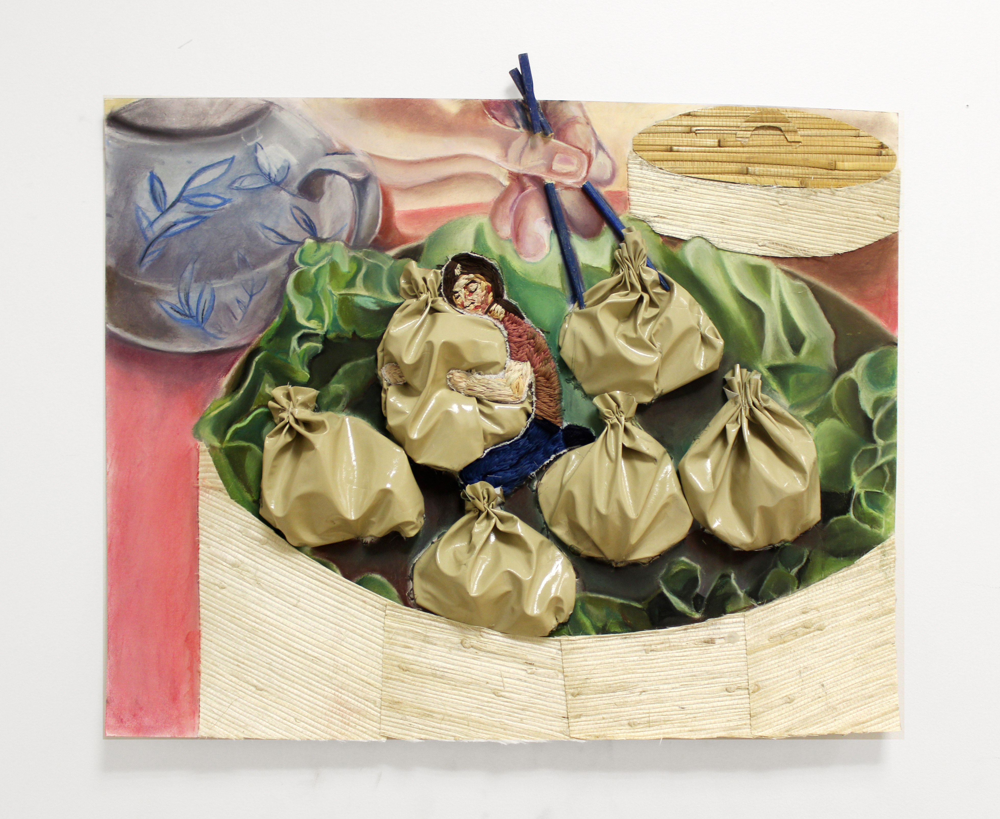

Always Look Up!
Description: This was one of my first observation of architecture through a different medium. It's a reminder that you'll never miss out on a moment to admire architecture.

Circle of Life
Description: A still life of various objects representing life. IN the world we live in, people always rely on each other, but the moment we start to lose our loved ones, we need to learn to let them go.

Ooh Ooh Pick Me!
Description: A piece that reminds everyone to place their passion in everything you do. Only you are looking at yourself at every self. Learn to grow as a person and look out after yourself.

Down the Rabbit Hole
Description: Inspired by Alice in Wonderland, this house is on a hill and resembles Alice escaping reality as she descneds each level. Floor 1 is "reality" as she struggles to fit into societal standards and feels liek she is trapped in a small space.

9:00 AM Sunday Surprise
Description: Learning to accept your own heritage often is difficult.

Reincarnation
Description: Like fireworks exploding in the sky, people are always expanding new knowledge, passions, and ideas.

Hard Day's Night
Overcoming each level is sevuring a building block towards understanding ourselves more.
Red Blue House
Description: This is inspired by thailand architecture, the beauty to detail every aspect of a house. You'll never miss out on a moment to admire architecture that was once built before you.